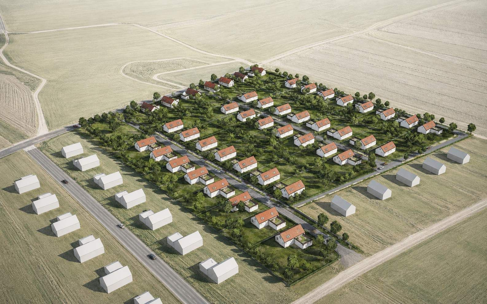
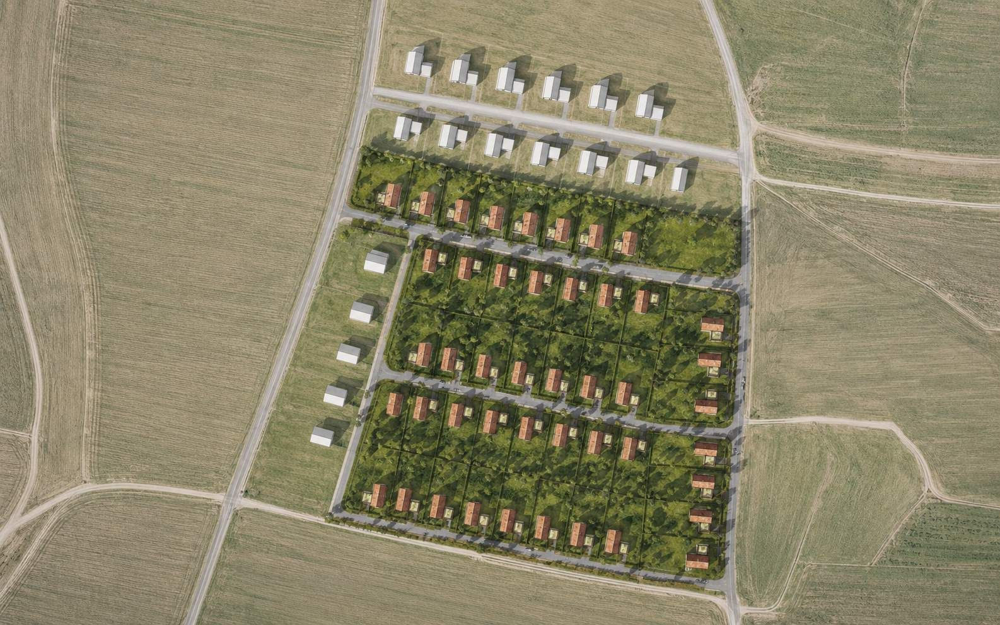
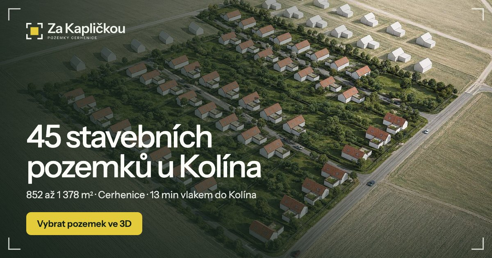

Brand manuál · verze 1 · 10/2026
Za Kapličkou
Značka pro prodej 45 stavebních pozemků v Cerhenicích. Název je skutečný místní název pole z katastru. Symbol tvoří rohové značky geodeta, které vymezují žlutý čtverec: váš pozemek. Prodáváme pozemky, proto ve značce nejsou domy.
Logo
logo.svg
logo-mono.svg
logo-compact.svg · web, malé plochy
mark.svg
favicon.svg · ikona, avatar
Ochranná zóna kolem loga = šířka žlutého čtverce. Nejmenší výška loga 24 px. Logo nedeformovat, nepřebarvovat mimo tyto varianty.
Barvy
Ornice#17281E · text #132019
Pole#F2F4EE · pozadí
Řepka#E4CB3C · CTA, výběr
Tráva#A9C98D
Mez#E7EBDF
Žlutá jen na jednu věc na ploše: hlavní tlačítko, vybraný pozemek nebo symbol. Na žlutou vždy tmavý text.
Písmo
Instrument Sans · nadpisy, text, logo
Pozemky u Kolína
Parcely 852 až 1 378 m² na klidném okraji Cerhenic. Nadpisy Medium s těsnějším prokladem, text Regular.
Geist Mono · čísla, data, popisky
983 m² · č. 12
Výměry, čísla parcel, malé popisky verzálkami. Připomíná zaměření geodeta.
Motiv: rohové značky

Fotky a vizualizace
Rámujeme rohy, ne celý obrázek
Čtyři tenké rohy 2 px ve světlé barvě, odsazení 14 až 20 px od kraje.
Vybraný pozemek
Žlutý čtverec = váš pozemek
Ve 3D plánu, na mapě i v tiskovinách je vybraná parcela vždy žlutá.
Tón komunikace
Věcně, konkrétně, s čísly
Výměry, minuty, metry. Žádné „luxusní bydlení snů“. Tykání ne, vykáme.
Použití

Příspěvek 1:1 · plachta na plot 3:1 · náhled pro sdílení 1200 × 630 (assets/img/og.jpg)